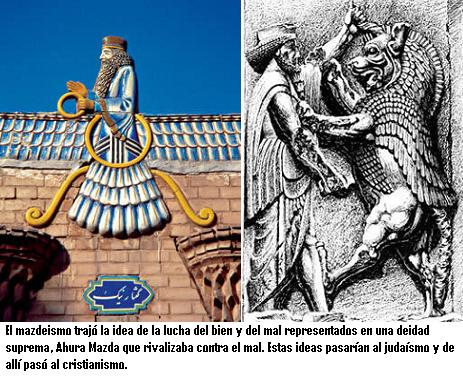
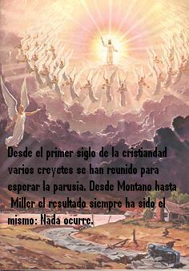

Por fin llegó el tan vociferado 28 de octubre de 1992. Veinte mil fundamentalistas en Corea del Sur, Los Ángeles y Nueva York esperaban el segundo regreso de Jesús. Como sabemos esto no pasó. En diciembre de 1992 su líder religioso, el pastor Lee Jang Rim fue detenido por haber estafado a sus feligreses 4.4 millones de dólares. ¿Pero qué pensaba hacer el pastor Rim con ese dinero si el mundo iba a finalizar? Bueno, el pastor había invertido el dinero en bonos que curiosamente no daban ganancias sino hasta el año siguiente de la supuesta venida de Jesús.
Los humanos siempre hemos anhelado que alguien externo a nosotros venga a solucionarnos los problemas. Pero dudo que esto suceda… Muestra de estas esperanzas es un volante que recibí de una señora Testigo de Jehová que titula “¿Quiere vivir para siempre en el paraíso?” El volante proclama un mundo nuevo, sin enfermedades ni muerte. Pero para gozar de este paraíso que vendrá después del fin del mundo tienes que unirte a su grupo religioso, los que no lo hagan serán chamuscados en una batalla que llamas el Armagedón. En el volante se menciona un verso de la Biblia (Isaías 11) donde dice que en el “nuevo mundo” los leones y las ovejas vivirán juntos y en paz, y los leones comerán hierba. A pesar de lo dulce que puede sonar esto, no puedo dejar de ser escéptico a muchas cosas de esta historia, incluyendo lo de los leones que pastarán hierba ¿Cómo podrán alimentarse de pasto con esas muelas carniceras, ese intestino corto, impropio para un pastador, y sin las mutualistas comunidades de microorganismos que les ayuden a degradar la celulosa? ¡Pobres leones! Pero por el momento dejaremos de lado a los mencionados creyentes y a sus leones que comen hierba, para mirar este tema del fin del mundo desde otra óptica: ¿Es reciente el tema del fin del mundo? ¿Desde cuándo se introdujo este elemento en las religiones? ¿Qué podemos aprender de estas predicciones fallidas?
No todas las culturas han establecido creencias relacionadas con el fin del mundo. El hinduismo y el budismo tienen una visión de ciclos de nacimiento y renovación. Incluso el budismo contempla la idea de varios universos simultáneos. Las religiones que promulgan un fin del mundo son el cristianismo, el islamismo y el judaísmo. El cristianismo tomó el tema del fin del mundo del judaísmo al igual que el islam. Sin embargo, pocos saben que las creencias de un fin del mundo no se originaron en el judaísmo.
Hablando sobre el origen de la literatura apocalíptica el historiador Guillermo Fatás de la Universidad de Zaragoza nos cuenta que
“…la literatura apocalíptica es muy antigua y no se origina, como se ha visto con el Cristianismo: la cuna de esta visión particular del fin del mundo es, según todos los indicios conocidos, persa y conexa con Zoroastro. En suma, los apocalipsis tratan del último episodio de la titánica lucha entre el Bien y el Mal, en cualquiera de sus formas, pensamiento que, aunque de apariencia maniquea (de nuevo, la cultura persa), no es ajeno a la Biblia. En su época de esplendor, el complejo de pueblos iranios (medopersas) al que pertenecieron Zoroastro y su religión conquistó Mesopotamía y, con ella, la famosa Babilonia. En Babilonia vivía entonces en cautiverio, con otros pueblos más, la comunidad judía, exiliada a la fuerza desde los años de Nabuconodosor, el último de los grandes soberanos semitas del área. Cuando Babilonia fue tomada por los persas, el rey Ciro permitió a los judíos que lo desearan regresar organizadamente a Jerusalén…”
“En esos años, algunas de las grandes ideaciones literarias del mazdeísmo prenderán con vigor en el judaísmo y desde éste, siglos más tarde, pasarán sin intermediación al cristianismo, como un género ya constituido, completo, en el que solo se introducirán, desde el punto de vista de la estructura general y narrativa, variaciones de detalle y las modificaciones exigidas por la peculiaridad de cada creencia: Ormuz (o Ahura Mazda) y Ahrimán serán sustituidos por Dios (Yavhé) y Satanás o alguna de las concreciones de éste y la mediación salvífica será encomendada al Mesías de la casa de David. Este exordio erudito era necesario para centrar los antecedentes del Apocalipsis cristiano, que naturalmente, están en el Antiguo Testamento. El más importante de esos precedentes es el Libro de Daniel, que narra lo sucedido al profeta judío y a sus allegados durante los reinados de Nabunodosor II, Baltasar (que no fue rey de Babilonia, aunque se le llame así en el texto bíblico), Darío I fue posterior a Ciro II el Grande, al revés de lo que dice el texto profético. Sucede, sencillamente que el Libro de Daniel no se escribió en la época que aparenta estar escrito, sino mucho después, cuando en el judaísmo se puso de moda el género apocalíptico y el redactor ya no tenía conocimiento directo de los sucesos ni acceso a registros fiables sobre la sucesión correcta, muy abundantemente documentada, de los soberanos del Imperio Neobabilonio (el de Nabuconodosor) y del Imperio persa (el de Ciro y Dario)”
—El fin del mundo: Apocalipsis y milenio. Fatas Cabeza, Guillermo. 2001. Pág 44 y 45.

Así pues podemos ver que no son nuevas las doctrinas sobre el fin del mundo. Un recorrido por la historia nos muestra que en diferentes momentos han aparecido predicadores y profetas vaticinando el fin del mundo y escribiendo profecías por montones. De hecho, el libro del Apocalipsis atribuido a San Juan es tan solo uno entre tantos que se escribieron en la época. Había otros textos apocalípticos circulando en las comunidades cristianas primitivas. Estos libros eran El Apocalipsis de Baruc, IV de Esdras, Paralipómenos de Jeremías, Apocalipsis de Abraham, el Testimonio de los Doce Patriarcas, etc. Al igual que existían muchos más evangelios a parte de los cuatro que quedaron oficialmente en la Biblia. ¿Cómo se hizo para seleccionarlos? No fue por la coherencia entre los libros seleccionados, porque existen contradicciones aún entre los libros qua actualmente forman la Biblia. La selección del libro apocalíptico para el Nuevo Testamento no se debió una voz clara del cielo que lo ordenará. En realidad fue bajo la orden del emperador romanos Constantino que Eusebio de Cesarea creo la compilación de textos para la Iglesia Católica, luego San Jerónimo haría una escogencia de textos religiosos que conformarían el Nuevo Testamento y bajo la tutela de los padres de la Iglesia se determinó cuales evangelios, de los muchos disponibles, eran o no “inspirados”. La Biblia cristiana que conocemos hoy con su Apocalipsis y el Libro de Daniel fue ensamblada por primera vez en el Concilio de Hipona en el año 393 de nuestra era. Dicho canon fue confirmado en el Concilio de Cartago en el año 397 y nuevamente confirmado por decreto en la cuarta sesión del Concilio de Trento del 8 de abril de 1546 (este último no es aprobado por los protestantes).
Muy temprano en el cristianismo ya tenemos predicas sobre el fin del mundo. De hecho el Evangelio de Mateo pone en boca de Jesús a decir “no pasará esta generación hasta que todo se haya cumplido” refiriéndose al fin del mundo. Pero la primera vez que una gran masa de cristianos se organizó para recibir el fin de los tiempos fue con Montano. En el año 156 en Frigia, una región de la actual Turquía, Montano empezó a predicar el inicio de una nueva era en la iglesia, a la que llamo “Era del Espíritu”. Montano predicaba que el fin de los tiempos se acercaba y que llegaría en un plazo muy breve, resurgiendo así la espera de la parusía o segunda venida de Cristo tal como lo habían esperado las primeras generaciones cristianas. Montano tenía a su vez dos mujeres que se decían profetizas: Priscila o Prisca y Maximila, las cuales hablaban cosas ininteligibles en un trance. Por lo que vemos, este fenómeno del éxtasis religioso tampoco es de los tiempos recientes. Montano y sus seguidores creían firmemente que el fin del mundo llegaría pronto y que la Nueva Jerusalén descendería del cielo. Multitudes de cristianos se reunieron para esperar este acontecimiento en la llanura entre las ciudades de Pepuza y Timio. Nada ocurrió. Muchas prédicas y esperas del fin del mundo más habrían de venir, pero ya no por parte de los montanistas.
La forma como los creyentes han tomado estos chascos es muy curiosa. La mayor parte de ellos hacen una reinterpretación posterior. Aducen que la profecía era correcta, pero no se refería al fin del mundo sino a otra cosa. Esto ocurrió con los milleristas en 1844, dando origen a los adventistas, o con las previsiones hechas por los Testigos de Jehová, nacidos bajo la influencia del adventismo, para las predicciones de 1914, 1918 y 1925. Afortunadamente existe otra forma de abordar este tema del fin del mundo y esa forma es el racionalismo.
Como racionalista se que solo puedo aceptar algo de lo cual hayan pruebas suficientes. Debo exigir evidencias, lo cual incómoda a los creyentes, pues esto va en contra vía con la fe. Antes de creer algo porque lo dice la Biblia, preguntémonos ¿tengo que creer algo simplemente porque está en la Biblia? ¿Por qué he de considerar más cierto lo que dice la Biblia que lo que dice otro libro? Muéstrenme las pruebas por favor.
Volvamos a la historia de los “leones pasteadores” que predican testigos de Jehová, evangélicos y adventistas. ¿No será esta historia fruto más de la esperanza humana que un aspecto real? ¿No serían las predicciones fallidas de los testigos de Jehová un esfuerzo humano más, sin nada de sobrenatural, lo que guio el proceso? ¿No serían las visiones de Priscila y Maximila, en la época de los primeros cristianos fruto de alguna enfermedad cerebral? ¿Quizás epilepsia de lóbulo temporal? ¿No tendría también un problema epiléptico Elena G. de White cofundadora del adventismo quien veía visiones del fin del mundo? ¿No será lo del Armagedón de los Testigos de Jehová un mito más como las historias de Zeus y Poseidón? ¿Son las palabras de los evangelios realmente lo que dijo Jesús, o serían tergiversaciones, o peor aún, inventos, ya que los evangelios se escribieron muchos años después de su muerte? ¿Cómo saberlo? Como ya vimos, existían diferentes y contradictorios evangelios en los primeros días de la cristiandad. Sabemos que los libros que conforman la Biblia fueron fruto de un Concilio ¿Y cómo sabemos que los miembros del concilio escogieron los libros correctos? ¿Qué tenían los miembros del Concilio de especial para escoger los evangelios cuando ya habían pasado siglos después de los hechos que narraban? Las preguntas son incómodas para los creyentes, pero solo examinado las respuestas que nos den a la luz de las evidencias podremos acercarnos a lo cierto.
Cuando recibí el volante de los Testigos de Jehová le pregunté a la amable señora: ¿Cómo he de saber que esto si será cierto y no pasará igual que en 1925? ¿Mil novecientos que…? respondió. El año de 1925 fue señalado por Joseph Franklin Rutherford, segundo presidente de los Testigos de Jehová, como la fecha del inicio de ese nuevo mundo, que ilustran en sus volantes. En 1925, según él, resucitarían los personajes bíblicos Abraham, Isaac y Jacob, para disfrutar los deleites de ese nuevo mundo. ¿Pero donde acomodar a tan famosos personajes? A fin de recibir a los patriarcas, Rutherford mandó construir una lujosa mansión en San Diego, California, que llamó Beth Sarim (Casa de los príncipes). Por supuesto que el dinero provenía de los creyentes… Ni modo que los feligreses fueran groseros con los patriarcas bíblicos.
El libro Millones que ahora viven no morirán jamás de 1920 dice textualmente:
“Por lo tanto podemos esperar confiadamente que el año 1925 marque el retorno de Abrahán, Isaac, Jacob, y los fieles profetas de la antigüedad, particularmente aquellos mencionados por el Apóstol en Hebreos capítulo once, a la condición de la perfección humana.”
—Millones que ahora viven no morirán jamás, 1920. p.90.
Pero nada de lo predicho ocurrió y como Beth Sarim no podía quedar deshabitada, Rutherford decidió vivir allí hasta su muerte. Personalmente me queda la duda de cómo pretendía Rutherford comunicarse con los resucitados. ¿Les enseñaría Rutherford clases de inglés o él ya estaba aprendiendo hebreo antiguo?
Esta predicción fallida (hay varias en su historia), es poco conocida por los más de siete millones de seguidores actuales del movimiento. Esto no constituye la excepción, sino que es algo común en los movimientos milenaristas (que predican el pronto fin del mundo). “Olvida los no aciertos y refuerza la fe”, parece ser la regla. Esto fue justo lo que ocurrió tras la “no venida de Jesús” profetizada para el 22 de octubre de 1844, por Guillermo Miller. Un milenio después de Montano la historia se repitió, pero las creencias en un Jesús en el cielo y que volvería, quedaron curiosamente vivas.
Los seguidores del granjero Guillermo Miller lo dejaron todo, y se reunieron para esperar la segunda venida del Señor. A medida que el día pasaba la tensión se acumulaba, el nerviosismo y las esperanzas de un mundo mejor por llegar se unían. Miller ya había profetizado el fin del mundo para el 21 de marzo y el 18 de abril de ese año. Sin embargo, la fe pudo más que la razón. Pocos días después uno de los seguidores de Miller dijo haber tenido una visión en la que veía a Jesús entrando en el lugar santísimo del Santuario Celestial. Según el vidente (el señor Hiram Edson), Miller no se había equivocado en la fecha, tan solo en el acontecimiento. De esta manera se dio inició a la Iglesia Adventista, cuyos feligreses (ya pasaron los 14 millones de fieles) esperan desde hace más de 150 años el inminente regreso de Jesús.
Si por casualidad usted se preguntó que está haciendo Jesús en ese recinto especial del Santuario desde 1844, la respuesta adventista es que Jesús está realizando el “juicio investigador”. Proceso que determinará quien se salva y quien no. Cuando Jesús terminé -dicen ellos- regresará a la Tierra a poner fin al sufrimiento. La verdad no puedo imaginarme a Jesús revisando los casos como si fuese un abogado humano. Por otro lado me queda la pregunta ¿Por qué tiene que molestarse Jesús con esos trámites, acaso él no lo sabe todo? Y esa demora de Jesús en resolver los casos ¿Tendrá problemas con los archivos? …O ¿No será esto del “juicio investigador” fue una excusa nacida desde la fe para encubrir una profecía no cumplida?
Sin embargo, el fallo más grande en cuanto a estas predicciones se encuentra en las narices de todos los fundamentalistas. En la mismísima Biblia. En Mateo 16: 28 Jesús dijo: “De cierto os digo que hay algunos de los que están aquí, que no gustarán de la muerte, hasta que hayan visto al Hijo del Hombre viniendo en su reino.” Según esto, el segundo regreso de Jesús se daría mientras vivieran algunos de los escuchas de ese sermón. Cosa que lógicamente no pasó. En otro texto, Jesús dijo: (Mateo 24: 30) “Entonces aparecerá la señal del Hijo del Hombre en el cielo…” En el verso 31 aclara: “De cierto os digo que no pasará está generación hasta que todo esto acontezca.”
No obstante los creyentes buscan interpretaciones por fuera de contexto. Interpretan generación como una gran cantidad de tiempo, dicen que se Jesús se refería a la última generación, lo cual es absurdo, etc., etc. La solución racionalista es sencilla, pero enteramente fastidiosa para los fundamentalistas: Sencillamente Jesús nunca mencionó esas palabras, ya que los evangelios fueron escritos entre los años 70 y 120 D.C. Para ese entonces ya había transcurrido suficiente tiempo para inventar historias. Los primeros cristianos esperaban que Jesús regresará en su época, razón por la cual, estas narraciones en las que el mismo Jesús prometía un pronto regreso les caía como anillo al dedo.
Los historiadores tienen suficientes evidencias para afirmar que los cristianos del siglo I y II esperaban la segunda venida para su época. Esto lo corrobora el libro de Apocalipsis, en el que un Jesús aparecido en una visión dice: (Apocalipsis 22: 6-7) “…para mostrar las cosas que deben suceder pronto. ¡He aquí, vengo pronto!” ¿Acaso pronto quiere decir más de 2.000 años?

¿Qué implicaciones tiene la proliferación de estas ideas? Para muchos no hay mayor problema aparte del enriquecimiento de algunos líderes y la desilusión de algunos creyentes de vez en cuando. Pero la falta de pensamiento crítico ha mostrado ser peligrosa para la sociedad. Para 69 adultos y 17 menores de la secta de los davidianos el fin llegó el 19 de abril de 1993. El FBI acusó al grupo que se encontraba encerrado en un rancho en Waco, Texas, de posesión de armas y abuso sexual de menores. Después de 51 días el FBI entró al rancho después de un largo cerco en el que hubo intercambio de disparos y muertos de lado y lado. David Koresh, el líder de la secta, quien se autoproclamó reencarnación de Jesús, también murió calcinado junto con sus seguidores luego de la toma por el FBI.
También es preocupante que algunos creyentes en el fin del mundo mezclen sus ideas con la política, trayendo fatales consecuencias. El historiador Guillermo Fatás al respecto afirma que:
“Estas creencias, que a unos parecerán respetables y a otros no, tienen una particular vocación de aplicación social e inmediata y no son neutras, ni asunto personal o íntimo, cuando sus defensores las aplican en la vida política sin tener en cuenta los derechos básicos de la comunidad. Durante la presidencia de Ronald Reagan, este espíritu inquietante mostró su influencia en lugares insospechados de la administración estadounidense. En 1981, el Secretario de Interior James Watt, un pentecostal declarado, anunciaba incesantemente no estar preocupado en demasía por la explotación intensiva de los recursos naturales, en su creencia de que se ignoraba “cuantas generaciones quedaban hasta el retorno del Señor” (sugiriendo que no serían ya muchas).”
—El fin del mundo: Apocalipsis y milenio. Fatas Cabeza, Guillermo. 2001. Pág 185.
Por último, no dejo de asombrarme de la división maniquea que los creyentes del fin del mundo tienen. Ese exclusivismo religioso, en que solo los que son de su grupo son los buenos y todo lo ajeno a ellos es malo, conlleva al sectarismo y a la discriminación por motivos religiosos. “El infierno y el paraíso me parecen desproporcionados. Los actos de los hombres no merecen tanto” decía Jorge Luis Borges ilustrando claramente que el invento de Zoroastro y copiado por los judeocristianos y los musulmanes no es más que eso.
No obstante todo lo dicho anteriormente, nunca se podrá convencer a un creyente de lo contrario porque la fe religiosa no se basa en la razón. Y esto es lo más peligroso que tienen las religiones. El rechazo del escepticismo en la religión es lo que hace que un religioso moderado de hoy pueda ser un sectario mañana. Pero a pesar que las religiones y sectas pervivan es necesario ensalzar más que nunca el racionalismo, pues cuando alguien opta por revisar sus creencias racionalmente en lugar de aceptarlas por tradición o una supuesta revelación, esta dando un paso adelante hacía una sociedad crítica y librepensadora.
Volver a la sección Examinando las religiones
Comentarios
Comments powered by Disqus